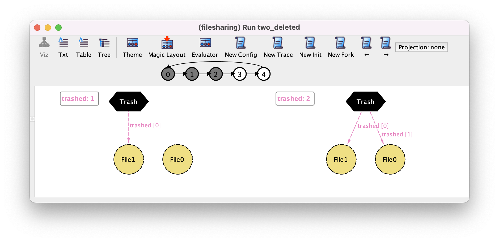
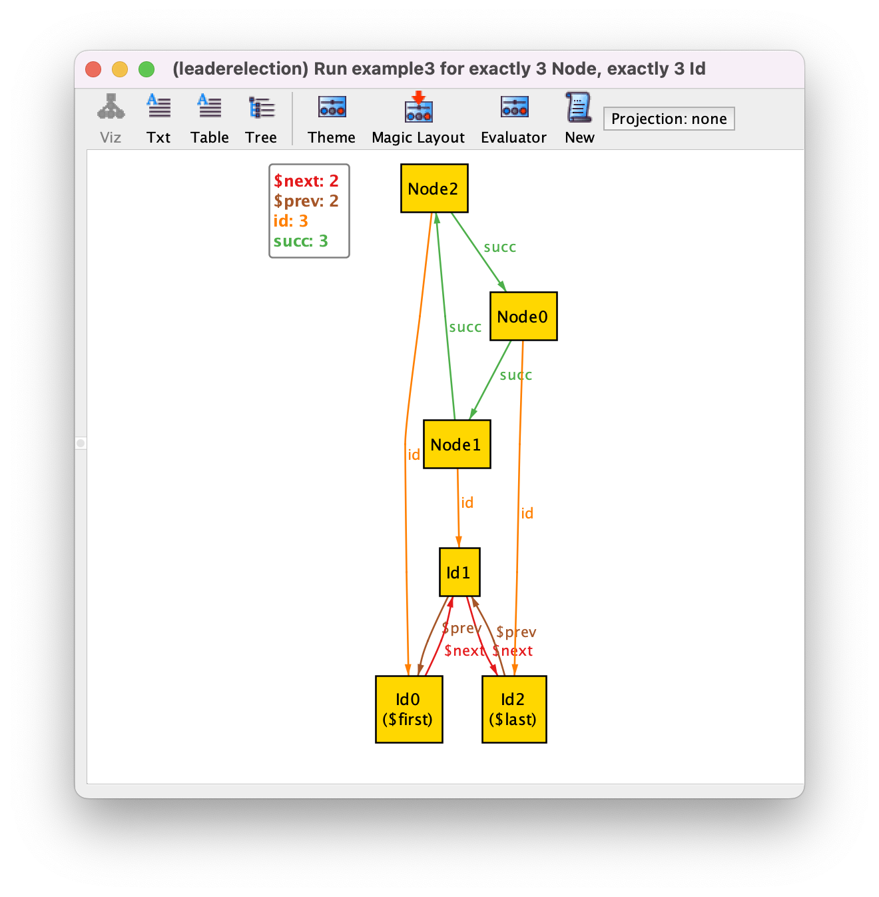
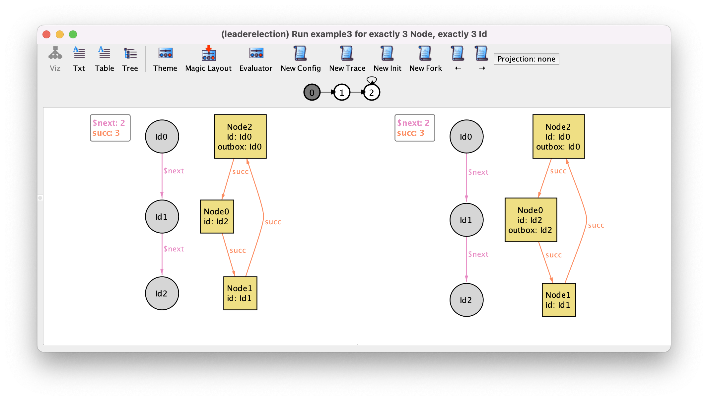
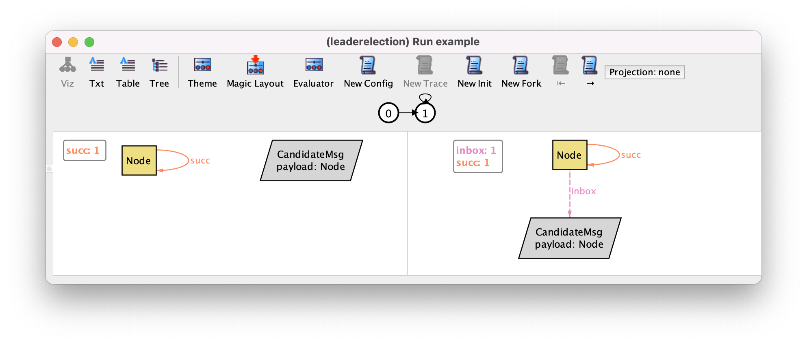
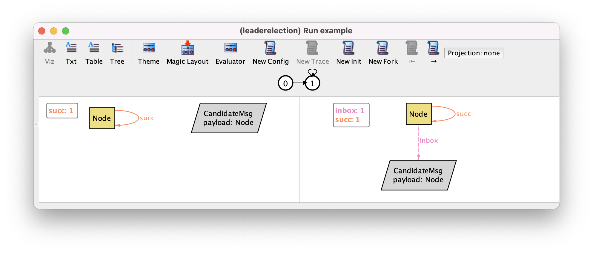

Protocol design#
In this chapter we will explain how to specify and analyze a distributed protocol using Alloy. We will use a very simple example of a leader election protocol. The aim of a leader election protocol is to designate one node in a network as the organizer or leader of some distributed task. Nodes are initially unaware of which node will play that role, but after running the protocol all nodes should recognize the same node as leader. Many different leader election protocols exist: here we will use a well-known version that can be used to elect a leader in a network of nodes organized in a ring, and where nodes also have unique identifiers. This is an example commonly used when presenting idioms for behavior specification in Alloy [MIT12]. This protocol was proposed by Chang and Roberts [CACM79] and roughly operates as follows: the goal is to elect as leader the node with the highest identifier; each node starts by sending its own identifier clockwise; upon receiving an identifier, a node only forwards it if it is higher than its own; a node receiving back its own identifier designates itself as leader; finally the leader broadcasts its newly found role to the network. In our specification we will not model this last (trivial) step, and will only be concerned with the fundamental property of a leader election protocol: eventually exactly one (exactly one) node will designate itself as the leader.
Specifying the network configuration#
When designing a distributed protocol, we should start by specifying the network configurations in which it is supposed to operate. In this case, the protocol operates in a ring network of nodes with unique identifiers. Notice that many different network configurations satisfy this requirement: we could have rings of different size, and for the same size, different assignments of the unique identifiers to the nodes (the relevant fact here is the relative order in which the identifiers appear in the network). The verification of the expected properties of the protocol should take into account all possible different configurations (up to the specified bound on the ring size). The network configuration, although arbitrary, does not change during the execution of the protocol. As such, it will be specified with immutable sets and relations.
Unlike some formal specification languages, Alloy has no pre-defined notion of process or node. These have to be explicitly specified, by declaring a signature. Since the network of nodes forms a ring, a binary relation that associates each node with its immediate successor in the ring should also be declared.
sig Node {
succ : one Node
}
Recall that binary relations should be declared as fields inside the
domain signature. In the declaration of field succ the
multiplicity one is used to ensure that each node has exactly
one successor in the ring. As usual in Alloy, we can immediately start
validating our specification by asking for example instances using a
run command.
run example {}
By iterating over the returned instances with New we could get the following instance, which is not a valid ring.
{kind=link}
In addition to requiring each node to have exactly one successor, a simple way to ensure that a network forms a ring is to require that
every node is reachable from any other node. Given a node n,
to determine the set of nodes reachable from n via relation
succ we can use expression
n.^succ. This expression makes use of the composition (.) and transitive closure (^) operators presented in chapter Structural modeling. The constraint that succ forms a ring can thus be specified in a fact as follows.
fact ring {
// succ forms a ring
all n,m : Node | m in n.^succ
}
An alternative specification of fact ring is to require that the set of all
nodes (denoted by Node) is reachable from every node.
fact ring {
// succ forms a ring
all n : Node | Node in n.^succ
}
If we now iterate over all instances returned by command example we will get the 3 possible rings with up to 3 nodes and a configuration without any node, which is also allowed by our specification. The limit of 3 is due to the implicit command scope of 3 atoms per top-level signature. As an example we show the ring with 3 nodes.
{kind=link}
To enforce that we have at least one node we can add the following fact.
fact some_node {
// at least one node
some Node
}
Besides being organized in a ring, nodes must also have unique identifiers. Since we are going to need to compare identifiers, one possibility would be to just use integers to represent them. However, besides being totally ordered, integers carry additional semantics that is not necessary here. In particular, integers support arithmetic operations that will not be required in this example. When developing a formal specification it is good practice to be as abstract as possible and use the simplest structure that fulfills our needs. Also, the analysis of Alloy specifications with integers has some subtleties which makes it better to avoid, unless strictly necessary. As such, we will introduce a signature Id, to denote identifiers, a binary relation next that given an identifier will yield the next identifier in the total order, and two subset signatures to denote the first and last identifiers of the order. All identifiers but one (the last) have a next, so the multiplicity of this relation should be lone. Signatures first and last have multiplicity lone instead of one to allow for Id to be empty.
sig Id {
next : lone Id
}
lone sig first, last in Id {}
To constrain next to induce a total order over Id we could, for example, require that last has no next and all identifiers are reachable from first. The set of reachable identifiers (in zero or more steps via next) can be determined with the (reflexive) transitive closure of next. This operator is defined as *next = ^next + iden, the union of the transitive closure and the predefined identity binary relation, that relates each element of the domain to itself. We also need to enforce first and last to exist if there is some identifier.
fact total_order {
// next induces a total order
some Id implies some first and some last
no last.next
Id in first.*next
}
We can now define predicates to compare identifiers.
pred lte [a,b : Id] {
b in a.*next
}
pred gt [a,b : Id] {
not lte[a,b]
}
Having our identifiers totally ordered, we can now declare a field id inside signature Node, to associate each node with its identifier.
sig Node {
succ : one Node,
id : one Id
}
To ensure that identifiers are unique it suffices to require id to be injective, which can be done as follows.
fact unique_ids {
// ids are unique
all i : Id | lone id.i
}
If we can now create a new example3 command to ask for all configurations with exactly 3 nodes and 3 identifiers, as follows.
run example3 {} for exactly 3 Node, exactly 3 Id
If we iterate over all instances with New, we will get the two only (truly) different configurations with this scope: one where the identifiers increase as we move clockwise in the ring, and another where they decrease. The former is depicted below. This illustrates the power of Alloy’s symmetry breaking, which in this case prevents the return of any other instance (that necessarily would be isomorphic to one of these two).
{kind=link}
Specifying the protocol dynamics#
The coordination between the different nodes in this distributed protocol, like in many others, is achieved by means of message passing. Like nodes, Alloy has no special support for message passing, so all the relevant concepts have to be specified from scratch. In this case messages are just node identifiers, so there is no need to add a signature to model those. To capture the incoming and outgoing messages we can declare mutable binary fields inside signature Node, to associate each node with the set of identifiers it has received or that need to be sent, respectively. Using sets for the mailboxes is an abstraction that allows us to verify that the protocol is correct even if messages are transmitted out of order. In this protocol the same message is never sent twice by each node, so we also don’t need to account for multiple copies of the same message.
To declare a mutable field the keyword var should be used.
sig Node {
succ : one Node,
id : one Id,
var inbox : set Id,
var outbox : set Id
}
We also need to capture the nodes that have been elected as leaders. To do so we can declare a mutable signature Elected that is a subset of Node.
var sig Elected in Node {}
If we now run the example3 command we might get the following instance.

As we have seen in the Behavioral modeling chapter, the interface of the visualizer is different when we have mutable elements: it now shows two states of a trace side-by-side, there are several new instance exploration buttons in the toolbar, and a depiction of a path just below those. In this case we have a trace where the same state 0 repeats itself indefinitely, something that is possible since so far we added no restrictions that constrain the behavior of the protocol. We recall that in the depiction of the states, by default, immutable sets and fields (the configuration of the protocol) are shown with solid lines, while mutable ones are shown with dashed lines.
To simplify the visualization, we can configure the theme so that node identifiers, the inbox, and the outbox are shown as node attributes, and change the color of elected nodes to green. Since the elected nodes can now be easily distinguished by color we can also hide the respective textual label. As for the totally ordered identifiers, we will just show the next relation. The result of this customization will be the following.

Something that is clearly wrong in our instance is that in the initial state nodes already have identifiers in their inboxes and outboxes, and some of them are already elected. To restrict the initial value of these mutable fields we can add the following fact.
fact init {
// initially inbox and outbox are empty
no inbox and no outbox
// initially there are no elected nodes
no Elected
}
Since these constraints have no temporal operators (more on those later)
it applies to the initial state of the system. Rerunning the
example3 command now yields instances such as the following, where the
systems remains indefinitely in a valid initial state.
{kind=link}
We can explore additional instances by using the instance exploration buttons in the toolbar. For example, the New Fork button asks the Analyzer for a different trace with the same behavior up to the left-hand side state, but a different outcome of the current transition (a different right-hand side state). By pressing this button we may get the following.
{kind=link}
This trace displays a behavior that should not be allowed in a correct execution of the protocol: in the second state all of a sudden several identifiers appeared in the inbox and outbox of Node1. Moreover this node was also randomly designated as leader. So far this is allowed because we added no constraints to our specification that restrict how the system can transition from one state to another. If there are no constraints then any transition is possible.
As already explained in chapter Behavioral modeling, the simplest way to constrain the valid transitions is to consider all the possible events that can occur in the system, and for each event specify when it can occur (its guard) and what is its effect on the mutable relations. In our protocol we can distinguish three possible events:
a node initiates the execution by sending its own identifier to the next node;
a node reads and processes an identifier in its inbox, decides whether it should be propagated or discarded and, if it is its own identifier, elects itself as leader;
the network sends one message in the outbox of a node to the next one.
Alloy has no special keywords to declare events. A common approach is to declare a predicate for each event, that specifies its guard and effect, and add a constraint enforcing that at each possible state only one of those predicates can hold. Event predicates can also be parametrized, which in our example will be the node where the event occurs.
Let’s begin by specifying the initiate event. For each event we should
always start by specifying what is its guard, a constraint on the
current (or pre-) state that determines when can the event occur. To simplify our
specification, for the moment, we will assume that a node is free to initiate (or
re-initiate) the protocol whenever it wants, so in this case there will
be no guard, meaning the event is always possible. Then we should
specify the effect of the event on all mutable relations of the specification:
note that if nothing is said about a particular mutable relation then
its value can change freely when the event occurs. A special effect is
forcing the value of a mutable relation to not change at all,
something known as a frame condition. For example in this event we
will have two frame conditions, since it does not change the value of
inbox nor Elected. To specify that a relation does not
change with a logic formula we need to refer to its value in the next
(or post-) state. In Alloy the value of a relation (or relational
expression) in the next state is accessed by appending a prime. So, to
state that, for example, the relation inbox does not change we
could add the constraint inbox' = inbox. Likewise for
Elected. So far, the specification of event initiate looks as
follows.
pred initiate_no_effect [n : Node] {
// node n initiates the protocol
inbox' = inbox // frame condition on inbox
Elected' = Elected // frame condition on Elected
}
We now need to specify the effect on relation outbox. We can
start by specifying its effect on the outbox of the initiating
node. Expression n.outbox denotes the set of identifiers in
the outbox of node n in the current state. The effect
of this event on this set is to add n’s own identifier, which
can be specified by n.outbox' = n.outbox + n.id. Here we used
the set union operator + to add the singleton set n.id
to n.outbox. Note that requiring n.id to be present in
the outbox in the next state, which could be specified by n.id
in n.outbox', is not sufficient, as it would allow identifiers other than n.id
to be freely removed or added from n.outbox. Having specified
the effect on the outbox of n we now need to specify the
effect on the outbox of all other nodes. Again, if nothing is
said about those, they will be allowed to vary freely. Of course this
event should not modify the outboxes of other nodes, something we
could specify with constraint all m : Node - n | m.outbox' =
m.outbox, that quantifies over all nodes except the initiating one. The final specification of our event looks as follows.
pred initiate_no_guard [n : Node] {
// node n initiates the protocol
n.outbox' = n.outbox + n.id // effect on n.outbox
all m : Node - n | m.outbox' = m.outbox // effect on the outboxes of other nodes
inbox' = inbox // frame condition on inbox
Elected' = Elected // frame condition on Elected
}
To validate our first event we can impose a restriction stating that,
for the moment, this is the only event that can occur, and inspect the
possible instances to see if the system behaves as expected. To
specify such a restriction we need the temporal logic operator
always to enforce a formula to be true at all
possible states. In particular, to enforce that, at every possible
state, one of the nodes initiates the protocol, the following
fact can be added to the specification.
fact always_initiate {
// possible events
always (some n : Node | initiate_no_guard[n])
}
Running command example3 yields the following trace, where
Node2 initiates the protocol and then nothing else happens.
{kind=link}
On first glance, this may seem like an invalid trace, given that we
required that at every state one node initiates the protocol. However,
if we look closely at our specification of event initiate we
can see that it also holds true in a state where a node already has
its own identifier in the outbox, which
will remain in the outbox. Our specification did not had a guard forbidding
this occurrence of the event, and the effect n.outbox' =
n.outbox + n.id is also true if n.id is already in
n.outbox and in n.outbox'.
To address this issue we could add a guard like n.id not in n.outbox to predicate initiate_no_guard. However, this
only forbids a node from initiating the protocol if it’s own
identifier is in its outbox at that particular moment. This means that, once we
include an event to send messages and this identifier leaves the
outbox, a node will be able to re-initiate the protocol. This does not
pose any problem concerning the correctness of this particular
protocol, but if we really wanted each node to initiate the protocol
only once we would need to strengthen this guard.
One possibility would be to add a field to record at which phase of the protocol execution each node is in, and allow this event only when a node is in an “uninitiated” phase. This would be the common approach in most formal specification languages. However, with Alloy we have a more direct alternative. Since there is no special language to specify events and they are specified by arbitrary logic formulas, we are free to use temporal operators to specify guards or effects. By contrast, in most formal specification languages we can only specify the relation between the pre- and post-state.
In this case we could, for example, use the temporal operator
historically, that checks if something was always true in the
past up to the current state, to only allow initiate to occur
if the node’s identifier was never in its outbox. The specification of
our event would look as follows.
pred initiate [n : Node] {
// node n initiates the protocol
historically n.id not in n.outbox // guard
n.outbox' = n.outbox + n.id // effect on n.outbox
all m : Node - n | m.outbox' = m.outbox // effect on the outboxes of other nodes
inbox' = inbox // frame condition on inbox
Elected' = Elected // frame condition on Elected
}
Unfortunately, after adding this guard our command will return no trace, meaning there are no behaviors that satisfy our constraints. This happens because we are currently not allowing messages to be sent or read, so after all nodes have initiated the protocol nothing else is allowed to happen by our specification, and it is impossible to obtain a valid trace. Recall that traces are infinite sequences of states, where the system is always evolving. A simple way to solve this issue is to add an event allowing the system to stutter, that is to do nothing (keeping the value of all relations unchanged). Stuttering can also be understood as an event specifying something else that is occurring on the environment outside the scope of our specification, and in general it is a good idea to add such stuttering events. In this case, a predicate to specify a stuttering event can be specified as follows.
pred stutter {
outbox' = outbox
inbox' = inbox
Elected' = Elected
}
To allow this event we need to change the above fact that restricts the possible behaviours.
fact stutter_or_initiate {
// possible events
always (stutter or some n : Node | initiate[n])
}
Running command example3 returns a trace where nothing happens
in our system, something that is now allowed. If we press
New Fork we might get a trace such as the previously
depicted, where Node2 initiates the protocol and then nothing
else happens. If we move to the next state by pressing →,
and fork again with New Fork, we might get the following
trace where Node0 initiates the protocol after Node2.
{kind=link}
By exploring a bit more the possible traces we can get some confidence that event initiate is well specified.
Let us now specify the send event. In this event we could have as parameters the node
n from where the message will be sent and the message
i that will be sent (an identifier). The guard of this event
should require i to be in the outbox of n. The
effect will be to remove i from the outbox of
n, and add it to the inbox of the next node n.succ. All
other inboxes and outboxes should keep their value, as well as the
Elected set. The specification of this event would be the following.
pred send [n : Node, i : Id] {
// i is sent from node n to its successor
i in n.outbox // guard
n.outbox' = n.outbox - i // effect on n.outbox
all m : Node - n | m.outbox' = m.outbox // effect on the outboxes of other nodes
n.succ.inbox' = n.succ.inbox + i // effect on n.succ.inbox
all m : Node - n.succ | m.inbox' = m.inbox // effect on the inboxes of other nodes
Elected' = Elected // frame condition on Elected
}
For event process again we could have as parameters the node
n and the message i to be
read and processed. The guard should require that i is in the
inbox of n. The effect on inbox is obvious:
i should be removed from the inbox of n and
all other inboxes should keep their value. The effect on the
outbox of n depends on the whether i is
greater than n.id: if so, i should be added to the
outbox, to be later propagated along the ring; if not, it
should not be propagated, meaning the outbox of n will
keep its value. To write such conditional outcome we could use the
logical operator implies together with an else:
C implies A else B is the same as (C and A) or (not C
and B), but the former is easier to understand. The event has no
effect on the outboxes of other nodes, which should all keep their
value. The same conditional outcome applies to Elected: if the
received i is equal to the n’s own identifier, then
n should be included in Elected; else Elected
keeps its value. The full specification of process is as
follows.
pred process [n : Node, i : Id] {
// i is read and processed by node n
i in n.inbox // guard
n.inbox' = n.inbox - i // effect on n.inbox
all m : Node - n | m.inbox' = m.inbox // effect on the inboxes of other nodes
gt[i,n.id] implies n.outbox' = n.outbox + i // effect on n.outbox
else n.outbox' = n.outbox
all m : Node - n | m.outbox' = m.outbox // effect on the outboxes of other nodes
i = n.id implies Elected' = Elected + n // effect on Elected
else Elected' = Elected
}
We should now add these two events to the fact that constraints the valid behaviours of our system.
fact events {
// possible events
always (
stutter or
(some n : Node | initiate[n]) or
(some n : Node, i : Id | send[n,i]) or
(some n : Node, i : Id | read[n,i])
)
}
Before proceeding to the verification of the expected properties of
the protocol, we should play around with the different instance
exploration buttons to explore different execution scenarios and
validate the specification of our events. An alternative would be to
ask for specific scenarios directly in a run command. For
example, we could change command example to ask directly for a
scenario where some node will be elected. To do so we need to use the
temporal operator eventually, which checks if a formula is
valid at some point in the future (including the present state). Our
command would look as follows.
run eventually_elected {
eventually some Elected
} for exactly 3 Node, exactly 3 Id
Running this command will return a trace with 8 states where the
highest identifier is passed around until the respective node gets
elected. This is the shortest trace where a leader can be elected in a
ring with 3 nodes, corresponding to one initiate event followed by 3
interleaved send and read events. The Analyzer guarantees that the
shortest traces that satisfy (or refute) a property are returned
first. The first transition of this trace is the following, where the
node with the highest identifier (beware, that this is Id1) initiates the protocol.
{kind=link}
In the last transition, that can be focused by pressing → 6 times or by directly clicking the state numbered 6 in the trace depiction, this node reads back its own identifier that was passed around in the ring and elects himself as leader.

Further reading
Learn about the different ways to specify effects and frame conditions of events. Some of them allow for a very terse style that simplifies the specifications.
Further reading
Learn how to specify richer run commands to search for specific scenarios, where a particular sequence of events occurred.
Verifying the expected properties of the protocol#
The key property of our protocol is that exactly one node will become leader. We can break this property into to simpler ones:
there will never be more than one leader;
every leader remains leader;
eventually there will be at least one leader.
These properties are of very different nature: the first two are a safety properties, forbidding some (undesired) behavior of the system, while the latter is a liveness property, forcing some (desirable) behavior of the system. The analysis of safety properties is usually simpler than the analysis of liveness properties. To find a counter-example for a safety property it suffices to search for a finite sequence of states that leads to a (bad) state (in the case of the first property, one state where there are two or more leaders), and it is irrelevant what happens afterwards, as any continuation of this finite sequence will still be a counter-example. On the other hand, to find a counter-example for a liveness property it is necessary to search for a complete infinite trace where the expected behavior definitely never happened (in the case of the last property, one trace where a leader is never elected). Moreover, it will be necessary to impose additional fairness conditions when verifying liveness properties, in particular to forbid bogus counter-examples where at some point the system stutters forever and never executes an enabled event.
Let us start by verifying the first (safety) property. Recall that
properties that are expected to hold can be written in named
assertions (declared with keyword assert) and then verified
with check commands. This safety property is a very simple
example of an invariant, a property that requires something to be
be true in all states of all possible traces. In Alloy, invariants can
be specified using the temporal operator always. In each state, to check that
there is at most one leader in set Elected we could use
the keyword lone. This invariant could thus
be specified as follows.
assert at_most_one_leader {
always (lone Elected)
}
To check this assertion we could define the following command.
check at_most_one_leader
This protocol is known to be correct, so, as expected, running this command returns no counter-example. Recall that the default scope on top-level signatures is 3, so this command verifies a single execution that the property holds for all rings with up to three nodes. This Alloy ability of model checking a property at once for all possible configurations of a system is not possible in some competing model checkers, where we are forced to specify the specific configuration on which we want to verify a protocol. That is rather cumbersome, since with a reasonable scope there can be many different configurations and its difficult to even enumerate them manually. Also, we could easily miss a bug in a specific configuration.
As mentioned in chapter Behavioral modeling, by default, verification of temporal properties in Alloy is done with a technique known as bounded model checking, meaning that the search for counter-examples will only consider a given maximum number of different transitions before the system starts exhibiting a repeated behavior. By default this maximum number is 10. To increase our confidence in the result of the analysis we could, for example, check this property for all rings with up to 4 nodes and consider up to 20 different transitions (or steps). To do so we could change the scope of the command as follows.
check at_most_one_leader 4 but 20 steps
This commands sets the default scope on signatures to 4 but also
changes the scope on transitions to 20 using keyword
steps. Again, as expected, no counter-example is returned, but
the analysis now takes considerably longer, as there are many more
network configurations and states to explore.
It is also possible to check a temporal property with unbounded model
checking if a compatible solver is selected. This will consider an arbitrary number of
transitions, but still with the signatures bounded by a maximum
scope. To do so, a special scope on steps is needed
to trigger unbounded temporal analysis.
check at_most_one_leader 4 but 1.. steps
The second expected property is another example of a safety property, this time requiring a nested always operator to be specified.
assert leader_stays_leader {
always (all n : Elected | always n in Elected)
}
check leader_stays_leader
The third expected property is a very simple example of a liveness
requirement, namely one that requires something to hold at least in
one state of every trace. Such properties can be specified directly
with the temporal operator eventually. Inside this temporal
operator, again a very simple cardinality check on Elected
suffices, this time with keyword some.
assert at_least_one_leader {
eventually (some Elected)
}
The following command can be used to check this property with bounded model checking and the default scopes.
check at_least_one_leader
We recommend that you start by verifying specifications with bounded model checking, because it is usually much faster than the unbounded counterpart, and most counter-examples tend to require only a handful of transitions. Once you have a design where no counter-example is returned with bounded model checking, you can increase your confidence on the analysis by using unbounded model checking. As hinted above, running this command immediately returns a counter-example where the system stutters forever, and obviously no leader is elected. This conter-example can be replicated in trivial configurations, for example the following with a single node.

This behavior is currently allowed because we added a stutter event that captures events external to our system. At the moment this event can occur indefinitely, which is a bit unrealistic or unfair to the system under analysis: for example, if at some point one node is continuously ready to execute one its events (the node is continuously enabled), then it should eventually do something. For example, in our protocol, a trace where at some point a message is in the inbox of a node but is never read is unfair to that node.
To specify such fairness properties we first need to understand two
well-known combinations of the always and eventually
temporal operators:
eventually always pholds in a system if all traces reach a state wherepbecomes valid indefinitely.always eventually pholds in a system if in every state of every tracepis later valid, which means thatpis true infinitely often.
To specify that a node is at some point continuously enabled we can use the
first combination. Most of the times the enabled condition for a node is exactly
the same as the disjunction of the guards of its events. In our case a node
n is enabled if it has never initiated or has some message in the inbox
or in the outbox. To specify that a continuously enabled event eventually occurs
(after the point it becomes enabled) the second combination of operators
presented above can be used. Note that a continuously enabled event would still
be (continuously) enabled after the required occurrence of the event, which
means that the event should occur again and again, or infinitely often. So, the
desired fairness condition can be specified as follows.
pred fairness {
all n : Node {
eventually always (historically n.id not in n.outbox or some n.inbox or some n.outbox)
implies
always eventually (initiate[n] or some i : n.inbox | process[n,i] or send[n,i])
}
}
Technically, this fairness condition is known as weak fairness, as the event is only required to happen if continuously enabled. Often this suffices to verify most liveness properties. However, sometimes we may need strong fairness constraints, requiring that the event occurs when it becomes recurrently enabled (infinitely often, but not necessarily continuously).
If we change the AtLeastOneLeader assertion to assume
the above fairness condition, no counter-example will be returned even with increased
scopes, as expected.
assert at_least_one_leader_fair {
fairness implies eventually (some Elected)
}
check at_least_one_leader_fair
Making the specification more abstract#
There are several ways in which we can make our specification of this protocol more abstract, and potentially speed up its analysis. For example, we actually do not need to model the identifiers explicitly: we can use each node atom name as its own identifier. For this we should impose the total order on Node itself, and get rid of signature Id and field id. Since we have a fact requiring that at least one node exists, the total order specification can even be a bit simpler.
sig Node {
succ : one Node,
next : lone Node,
var inbox : set Node,
var outbox : set Node
}
one sig first,last in Node {}
fact total_order {
// next induces a total order
no last.next
Node in first.*next
}
Of course, now we have to slightly change the specification of our event predicates and the assertions. For example, event process can now be specified as follows.
pred process [n : Node, i : Node] {
// i is read and processed by node n
i in n.inbox // guard
n.inbox' = n.inbox - i // effect on n.inbox
all m : Node - n | m.inbox' = m.inbox // effect on the inboxes of other nodes
gt[i,n] implies n.outbox' = n.outbox + i // effect on n.outbox
else n.outbox' = n.outbox
all m : Node - n | m.outbox' = m.outbox // effect on the outboxes of other nodes
i = n implies Elected' = Elected + n // effect on Elected
else Elected' = Elected
}
The example3 command now only needs to specify a scope for Node.
run example3 {
eventually some Elected
} for exactly 3 Node
Running this command yields the following instance (with the theme already customized), and it is now more clear if the ring follows the increasing order of the identifiers (as happens here), or the other way around.

Another signature we can remove is Elected, since actually we can infer which node has been elected by looking at what happened in the past: if at some point in the past a node had its identifier in the inbox and processed it, then it necessarily became a leader. Instead of declaring a subset signature we can define Elected as a derived set of nodes using a function without parameters.
fun Elected : set Node {
{ n : Node | once (before n in n.inbox and n not in n.inbox) }
}
Here, the set of elected nodes at each state is defined by comprehension. Note
the usage of the once and before past operators to check if
the desired transition happened in the past. We can now simplify the
specification of all three events, removing the effects on Elected. For
example, event process can now be specified as follows.
pred process [n : Node, i : Node] {
// i is read and processed by node n
i in n.inbox // guard
n.inbox' = n.inbox - i // effect on n.inbox
all m : Node - n | m.inbox' = m.inbox // effect on the inboxes of other nodes
gt[i,n] implies n.outbox' = n.outbox + i // effect on n.outbox
else n.outbox' = n.outbox
all m : Node - n | m.outbox' = m.outbox // effect on the outboxes of other nodes
}
Another abstraction could be to remove the outbox and incorporate the sending of a message in the initiate and process events. This is a reasonable simplification in this protocol, since each node only communicate with the successor node, and out of order message delivery is already being modeled by having the inboxes contain sets of messages. The declaration of signature Node becomes the following.
sig Node {
succ : one Node,
next : lone Node,
var inbox : set Node
}
The specification of event initiate should be changed to directly add the node identifier to the inbox of the successor node.
pred initiate [n : Node] {
// node n initiates the protocol
historically n not in n.succ.inbox // guard
n.succ.inbox' = n.succ.inbox + n // effect on n.succ.inbox
all m : Node - n.succ | m.inbox' = m.inbox // effect on the outboxes of other nodes
}
Finally, the specification of process should also be changed accordingly.
pred process [n : Node, i : Node] {
// i is read and processed by node n
i in n.inbox // guard
n.inbox' = n.inbox - i // effect on n.inbox
gt[i,n] implies n.succ.inbox' = n.succ.inbox + i // effect on n.succ.inbox
else n.succ.inbox' = n.succ.inbox
all m : Node - n - n.succ | m.inbox' = m.inbox // effect on the inboxes of other nodes
}
If we now run the example3 command we can see that it is now possible
to elect a leader in a ring with three nodes with almost half the transitions
(since send events are removed).
{kind=link}
With the same scope on the steps we can now check much longer behaviors
with roughly the same efficiency. If we check our three assertions they are all
still valid, as expected.
However, this specification is actually not correct! If we run the following command to get an example of electing a leader in a ring with one node, we will get no instances.
run example1 {
eventually some Elected
} for exactly 1 Node
The problem is in the specification of the effect of process on
n.succ.inbox. If the ring has a single node, both n and
n.succ are the same node, and the two conditions specifying the effect
on n.succ.inbox and on n.inbox contradict themselves, so the
process event cannot actually occur (is not truly enabled) even if its guard
is true in a state. This was the reason why checking the
AtLeastOneLeader assertion did not produce a counter-example, because
the fairness condition has the wrong enabledeness condition for this event. It
is very easy to commit such subtle mistakes while specifying, and introduce
inconsistencies, and to avoid them we should always exhaustively validate our
specification before checking our assertions. Ideally, we should have different
run commands to check the consistency of different scenarios, for
example asking to examples where leaders are elected in rings of different
sizes. To fix the specification of process we could require the frame
condition on n.succ.inbox to only apply when n.succ is not n
itself.
pred process [n : Node, i : Node] {
// i is read and processed by node n
i in n.inbox // guard
n.inbox' = n.inbox - i // effect on n.inbox
gt[i,n] implies n.succ.inbox' = n.succ.inbox + i // effect on n.succ.inbox
else n.succ != n implies n.succ.inbox' = n.succ.inbox
all m : Node - n - n.succ | m.inbox' = m.inbox // effect on the inboxes of other nodes
}
If we ask for a trace where a leader is elected in a ring with one node, we get the expected outcome after two events.
 

{kind=link}
Todo
@nuno: we never mentioned the relational style of effects here, which is actually quite nice
Explicit message-passing#
Up until now, we’ve actually been addressing only a phase of the leader election protocol. In a second phase, once a node identifies itself as the leader, it should propagate that information through all the other nodes to make sure that every node is aware of the elected leader. This second phase can begin while there are still messages from the first phase being exchanged, but in essence they contain the same information: an identifier, either of a candidate or of the leader. Thus, we can no longer abstract messages by just exchanging identifiers between nodes, and must introduce richer messages into our model. The need for such data structures is typical in software design, and in a programming language we would probably encode these messages as a record, or struct. However, doing so in Alloy has some caveats that must be taken into consideration. This section explores the pros and cons of some possible strategies to encode such messages.
Messages as static signatures#
We can easily extend our model to support messages by introducing an abstract
static signature to represent them, and then extend it by the more specific
message types. Signature fields would represent the data fields of the messages.
In our leader election protocol, we have two message types that happen to
contain the same kind of data – a node identifier – so we can define that
field at the top-level signature, which will be inherited by the specific
CandidateMsg and ElectedMsg. The message content is mandatory, so it is
assigned multiplicity one.
abstract sig Message {
payload : one Node
}
sig CandidateMsg, ElectedMsg extends Message {}
Then we need to adapt the node’s inboxes and outboxes to contain such messages. In the current state of our leader election model, where we have abstracted away the outboxes, this could simply be done as follows.
sig Node {
succ : one Node,
next : lone Node,
var inbox : set Message
}
Next, we must adapt the event predicates to consider messages. Some of these
events (such as when a node initiates, or elects itself the leader) are expected
to ‘create’ new messages. This is a main difference between record-like data
structures and trying to model them as static signatures: messages are never
really created, they permanently belong to a fixed universe of available
messages determined by the scope. Predicates must instead search for a messages
with the required content in that universe of messages through an existential
quantification. Predicate initiate, for instance, could be adapted in the
following way.
pred initiate [n : Node] {
// node n initiates the protocol
historically no CandidateMsg & payload.n & n.succ.inbox // guard
some m : CandidateMsg & payload.n {
n.succ.inbox' = n.succ.inbox + m // effect on n.succ.inbox
all m : Node - n.succ | m.inbox' = m.inbox // effect on the outboxes of other nodes
}
}
The first difference is in the guard: rather than testing whether its own
identifier has ever been in the inbox, an initializing nodes checks for a
candidate message with its identifier. Note that for a node identifier n,
payload.n retrieves all messages with that identifier, which intersected with
CandidateMsg gives all candidate messages for node n (in the current model,
there may multiple CandidateMsg atoms with the same payload). The second
difference is the existential quantification that searches for a message of the
appropriate type and content, and adds it to the successor’s inbox.
Rather than having an identifier as a parameter, the process event should now
consider a message. To ease the specification, we split the process event into
two predicates: processing a CandidateMsg message or processing an
ElectedMsg message. Predicate processCandidate becomes slightly more
complicated, since there are now three possible effects on the successor’s
inbox: as previously, it may either discard the message (if the identifier in
the message is smaller than that of the node), propagate it (if the identifier
in the message is larger than the one of the node). But now, when a node elects
itself as the leader (the identifier in the message is the same as that of the
node), it must also send a new elected message informing other nodes of that
fact. One possibility is to encode it as follows.
pred processCandidate [n : Node, m : CandidateMsg] {
// m is read and processed by node n
m in n.inbox // guard
n.inbox' = n.inbox - m // effect on n.inbox
gt[m.payload,n] implies n.succ.inbox' = n.succ.inbox + m // effect on n.succ.inbox
else m.payload = n and n.succ != n implies
(some m2 : ElectedMsg & payload.n | n.succ.inbox' = n.succ.inbox + m2)
else n.succ != n implies n.succ.inbox' = n.succ.inbox
all n2 : Node - n - n.succ | n2.inbox' = n2.inbox // effect on the inboxes of other nodes
}
To avoid complications identified earlier for rings with a single node, we
simply do not create the elected message in those cases (i.e., when the n is
its own successor). Otherwise, an elected message with the appropriate node
identifier is selected from the universe and added to the successor’s inbox.
Predicate processElected is very simple, just propagating the elected messages
unless it’s the elected leader receiving the message again after going through
the ring, in which case it is discarded.
pred processElected [n : Node, m : ElectedMsg] {
// m is read and processed by node n
m in n.inbox // guard
n.inbox' = n.inbox - m // effect on n.inbox
m.payload != n implies n.succ.inbox' = n.succ.inbox + m // effect on n.succ.inbox
else n.succ != n implies n.succ.inbox' = n.succ.inbox
all n2 : Node - n - n.succ | n2.inbox' = n2.inbox // effect on the inboxes of other nodes
}
You might have noticed that both process predicates share the guard and some effects. To promote maintainability, one could factor out the common formulas to an auxiliary predicate, simulating a kind of event hierarchy. That predicate would then be called from the concrete events as follows.
pred processMessage [n : Node, m : Message] {
// m is read by node n
m in n.inbox // guard
inbox' = inbox - n->m // effect on n.inbox
all n2 : Node - n - n.succ | n2.inbox' = n2.inbox // effect on the inboxes of other nodes
}
pred processCandidate[n : Node, m : ElectedMsg] {
processMessage[n,m]
... // effect on n.succ.inbox
}
pred processElected[n : Node, m : ElectedMsg] {
processMessage[n,m]
... // effect on n.succ.inbox
}
The Elected function, which determines the nodes considered elected at each
state, must also be adapted to consider messages. Again, recall that there may
be more than a CandidateMsg with the same node identifier, so we must test
whether the inbox of a node has ever contained one of those messages, which may
be achieved by testing whether their intersection is empty. To promote
readability, we use a let-expression to reuse that expression.
fun Elected : set Node {
{ n : Node |
let inbox_candidates = payload.n & CandidateMsg & n.inbox |
once (before some inbox_candidates and no inbox_candidates) }
}
Lastly, we just have to update the fact that forced valid events to occur to consider the message parameters and the new predicates.
fact message_events {
// possible events
always (
stutter or
(some n : Node | initiate[n]) or
(some n : Node, i : ElectedMsg | processElected[n,i]) or
(some n : Node, i : CandidateMsg| processCandidate[n,i])
)
}
Let us validate the new version of our protocol using the functionalities
provided by the Analyzer. Let us run our empty run command example just to
explore some possible traces. The first trace returned is one where there is a
single node and the system stutters forever (recall that bounded model checking
guarantees minimal trace prefix length). By hitting New Fork we
should be able to observe a different event, namely an initiate event.
However, depending on the selected solver, we may get the following message.

Let’s try to use the evaluator to debug the trace. Recall that the evaluator for
traces supports any formula and expression, and that this evaluation is always
performed on the focused state (the one at the left-hand side). We can start by
confirming that the system is simply stuttering by calling stutter at the
current state (in this case, the initial one since we did not navigate in the
trace), if it is happening after or even always. For all theses cases the
evaluator will answer true as expected. We can then ask the evaluator whether
there is some node for which the guard of the initiate predicate holds (a
formula with the past operator historically), or use comprehension to get all
nodes for which that guard holds. The evaluator will show us that it holds for
the existing node. It is worth reminding that evaluation over a specific
instance is very efficient, so it can be used abundantly. If the guard holds but
the event cannot happen, it means that the effects of the event cannot be
applied. By scope of the quantification searching for the new candidate message,
the issue becomes clear: there is no available CandidateMsg message in the
configuration of this trace that can be added to the successor’s inbox.

This issue is actually evident if we inspect the available messages in the
visualizer, as there are only ElectedMsg messages in the configuration. This
is a case where the guard does not necessarily entail the enabledness of the
event. So we can hit New Config until a CandidateMsg is available
(after closing the evaluator). This should happen after a few iterations. Then,
we can ask again for New Fork, and this time a node will effectively
initiate.

Let us continue to validate the protocol by inspecting a different network configuration (recall that with up to 3 nodes, there are only 4 distinct configurations). This should be easy to achieve by using New Config. Unfortunately, you’ll notice that the network configuration stayed the same, only the set of available messages changed. Since, as we’ve seen, the available messages are also part of the configuration, for the selected solver we actually need to hit New Config 10 times before seeing a different ring network, and dozens of times to inspect the 4 alternatives, as the Analyzer will just iterate over different sets of available messages.
{kind=link}

{kind=link}
One possible solution to circumvent these issues with message configurations is to enforce a generator axiom. These are constraints that force every possible combination of field values of a signature to exist in every instance. In our leader election model, we would want to force the existence of messages with all possible values, which would look like the following predicate.
pred generator {
all n : Node {
some m : CandidateMsg | m.payload = n
some m : ElectedMsg | m.payload = n
}
}
In order for models with the generator axiom to be consistent, we must set the
scope to allow every possible unique message. In our model, we can have one
message of each type for each available node, so the Message scope should be
twice that of Node. Notice that we define the generator axiom as a predicate,
rather than a fact: enforcing all possible messages to exist is helpful when
exploring scenarios, but not when checking properties, where enforcing such a
large set of messages would possibly encumber the solving process (satisfiable
commands, such as those generating scenarios, usually finish quickly). So we
call this predicate only in run commands for validation, such as the one
below for ring networks with exactly 3 nodes.
run example3_generator {
generator
} for exactly 3 Node, 6 Message
This command now guarantees there is a unique configuration of messages
available, and hitting New Config will effectively generate a new
network configuration. Unfortunately, this will only work if the scope for
messages is known exactly, which is not always easy to identify. Otherwise,
different messages with the same payload to be allowed to appear in the
configuration, giving rise again to the validation issues we were trying to
address. In fact, that will be the case if we no longer ask for exactly 3
nodes in the command above: for ring networks with 2 nodes, 6 messages result in
repetitions. To address this, we can also additionally enforce messages to be
unique with the following predicate.
pred unique {
all m1,m2 : CandidateMsg | m1.payload = m2.payload implies m1 = m2
all m1,m2 : ElectedMsg | m1.payload = m2.payload implies m1 = m2
}
Given this, even if we assign a scope to messages larger than the one needed, a unique message configuration is guaranteed to be generated.
run example3_unique_generator {
generator
unique
} for 3 Node, 10 Message
However, by forcing messages to be unique, we are actually restricting the set of possible behaviors of our protocol, and we must consider the implications of that decision. The main consequence is that, since inboxes are modeled as sets, it is now impossible to have two messages with the same content in an inbox (elements are unique in sets). But this was already the case in the version of the model without messages - a node identifier could only appear once in an inbox - so supporting duplicated messages is actually deviating from the original model. Regardless, this shouldn’t be a problem since in our current version each node generates at most one candidate message and an elected message. In the next section we will see how to support repeated messages in inboxes even if they are unique using sequences.
Regardless of the issues with trace iteration, we should always reason carefully about message scopes. For instance, we could try ask for a scenario where all nodes initialize and eventually one of them is elected with the following invalid command.
run bad_example {
all n : Node | eventually initiate[n]
eventually some Elected.inbox & ElectedMsg
} for 3 but exactly 3 Node, 20 steps
The Analyzer will reply that there is no such trace. That’s because the default
scope for signatures is 3, and 3 messages are not sufficient to represent this
trace (at least 4 are needed). This can also lead to a false sense of safety
from check commands, since a limited set of messages may reduce the valid
traces explored by the Analyzer.
So, before re-running the 3 check commands defined previously for our leader
election protocol, we should extend the scope of available messages (and also
adapt the fairness condition to the adapted guard of the initiate event).
They will all hold at this point.
check at_most_one_leader for 3 but 6 Message
{kind=link}
Todo
actually, if we change the fairness condition to be the actual enabled
condition of initiate - i.e., that there is a message available -
at_least_one_leader_fair will no longer hold because the event will no be
enabled in configurations without messages and will not need to occur.
Messages as mutable signatures#
The issues met above when validating the model were caused by messages being
part of the trace configuration. So one might wonder whether it would be a
better approach to make Message a mutable signature rather than a static one.
This way messages would not be part of the configuration and would be e created
– i.e., added to the mutable signature – as the system evolves. While this is
a feasible approach, it will also has an additional modeling – and performance
– overhead.
To make messages mutable, we just have to mark the relevant signatures as var.
This includes both the top-level signature and the specific sub-signatures,
since creating a message of a specific type also changes the value of the
top-level Message. The fields must also be marked as mutable: if payload was
static, newly created messages could not have a payload assigned.
var abstract sig Message {
var payload : one Node
}
var sig CandidateMsg, ElectedMsg extends Message {}
To keep the model simple, let us assume that messages can be created by events but are not deleted, even after being processed. So, an event predicate either creates a new message, or leaves the set of exiting messages unchanged. To support this, let us create two auxiliary predicates, shown below.
pred new_message [m : Message, n : Node] {
Message' = Message + m
payload' = payload + m -> n
}
pred same_messages {
Message' = Message
payload' = payload
}
Now, adapting the version of the predicates that considered static messages is
rather straightforward. Only two changes must be made: first, when searching for
a message to be created it must be selected from the succeeding state, since
it still doesn’t exist in the current state. Second, either new_message or
same_messages must be called to manage the set of available messages. For
initiate, this would look as follows. Notice how the quantification now
searches for an appropriate message in the succeeding state using '. The whole
expression must be primed since both the set of messages CandidateMsg and the
field payload must be evaluated in the succeeding state. Alternatively, one could
write CandidateMsg' & payload'.n.
pred initiate [n : Node] {
// node n initiates the protocol
historically no CandidateMsg & payload.n & n.succ.inbox // guard
some m : (CandidateMsg & payload.n)' {
new_message[m,n]
n.succ.inbox' = n.succ.inbox + m // effect on n.succ.inbox
all m : Node - n.succ | m.inbox' = m.inbox // effect on the outboxes of other nodes
}
}
The two process predicates are adapted in a similar manner. For instance, below is
the one for processing candidate messages, where the set of messages does not change
unless the nodes is elected and creates a new ElectedMsg.
pred processCandidate[n : Node, m : CandidateMsg] {
processMessage[n,m]
gt[m.payload,n] implies same_messages and n.succ.inbox' = n.succ.inbox + m // effect on n.succ.inbox
else m.payload = n and n.succ != n implies
(some m2 : ElectedMsg' & payload'.n | new_message[m2,n] and n.succ.inbox' = n.succ.inbox + m2)
else n.succ != n implies same_messages and n.succ.inbox' = n.succ.inbox
}
Other than this, except for enforcing the set of messages to be empty in the
initial state, no other changes need be made to the model. As can be seen in the
instance below for eventually_elected, messages are no longer part of the
trace configuration, and are dynamically created as the system evolves. As a
consequence, calls to New Config always generate an alternative
network configuration.
{kind=link}
The check commands can also be run exactly as they are, and will show to hold.
However, you will notice that this idiom has a considerable toll on performance
compared to the one where messages are static. For instance, the same
at_most_one_leader command whose execution log was shown above now takes an
order of magnitude longer to finish.
check at_most_one_leader for 3 but 6 Message

Having mutable messages, however, can allow for richer traces with smaller
message scopes since messages can be reused with different contents over the
trace. For instance, in our model, if we deleted messages after being processed,
we could reuse the same candidate message with different identifiers at
different points of the trace. Recall, however, that scopes can only be assigned
to top-level mutable signatures, and that atoms may not change the sub-signature
they belong to along the trace (i.e., a CandidateMsg atom cannot become an
ElectedMsg one).
Messages as tuples#
The two strategies we’ve seen above modelled messages as signatures, which is perhaps a way to reason about design that is close to the implementation level. However, we can also explore Alloy’s flexible relational logic to implement a more abstract version that bypasses signatures and implements messages directly as tuples. This has the advantage of avoiding the validation issues depicted above, and having a reduced performance overhead. The tradeoff is that it doesn’t scale very well for more complex message types.
Recall that fields in Alloy can be of arbitrary arity, so one can simply define
inboxes as a set of tuples relating all fields of a message: if a message has 2
fields of type A and B, then the inbox will contain pairs A -> B. However,
we will also need to identify the type of the message in the inbox. So the inbox
will actually contain triples Type -> A -> B. Since each inbox is associated
to a node, this would result in a quaternary inbox relation with type Node ->
Type -> A -> B. This would work if all message types contain exactly the same
mandatory fields of the same type, otherwise we would need to somehow normalize
this tuple set (more on this later).
In our current example we have two kinds of messages that happen to have the same single, mandatory field containing a node identifier, so it can simply be encoded as the following mutable ternary relation.
abstract sig Type {}
one sig Candidate, Elect extends Type {}
sig Node {
succ : one Node,
next : lone Node,
var inbox : Type -> Id
}
Notice that this idiom again disallows repeated messages in the inboxes, since a
tuple Type -> Id can only appear once in the inbox. But this was already the
case in our initial version of the protocol before messages as signatures were
introduced.
Adapting the event predicates is actually simpler than the version with messages
as signatures, since we can always create a new tuple with the needed atoms,
while the messages-as-signatures version required the existence of an adequate
message. So, in the initiate event, the guard just has to check whether the
tuple Candidate -> n has ever been in the inbox of the successor, and if
not that ‘message’ is added to the successor’s inbox.
pred initiate [n : Node] {
// node n initiates the protocol
historically Candidate -> n not in n.succ.inbox // guard
n.succ.inbox' = n.succ.inbox + Candidate -> n // effect on n.succ.inbox
all n2 : Node - n.succ | n2.inbox' = n2.inbox // effect on the outboxes of other nodes
}
The process events are also trivially adapted from the version without
messages by just considering the appropriate type in the inbox. The
processMessage auxiliary predicate now must take the type of the message as an
additional parameter t, and then just tests whether the tuple t -> i -
representing the message of type t with content i - is in the inbox of the
processing node n. If so, it is removed from the inbox, and all nodes preserve
their inbox, except for the processing node and its successor.
pred processMessage [n : Node, i : Node, t : Type] {
t -> i in n.inbox // guard
n.inbox' = n.inbox - t -> i // effect on n.inbox
all n2 : Node - n - n.succ | n2.inbox' = n2.inbox // effect on the inboxes of other nodes
}
The effect of the process events is just adapted to create message tuples of the appropriate type.
pred processCandidate[n : Node, i : Node] {
processMessage[n,i,Candidate]
gt[i,n] implies n.succ.inbox' = n.succ.inbox + Candidate -> i // effect on n.succ.inbox
else i = n and n.succ != n implies n.succ.inbox' = n.succ.inbox + Elect -> n
else n.succ != n implies n.succ.inbox' = n.succ.inbox
}
pred processElected[n : Node, i : Node] {
processMessage[n,i,Elect]
i != n implies n.succ.inbox' = n.succ.inbox + Elect -> i // effect on n.succ.inbox
else n.succ != n implies n.succ.inbox' = n.succ.inbox
}
And the same applies to the Elected function, that must identify candidate
messages in the inbox.
fun Elected : set Node {
{ n : Node | once (before Candidate -> n in n.inbox and Candidate -> n not in n.inbox) }
}
At this point, all commands will show to hold for this version of the model.
Below is a transition for the eventually_elected command.

Notice that, without messages as signatures, messages are now represented as
edges in the visualizer. In this case, the inbox is a ternary relation Node ->
Type -> Node, so the type appears as an annotation of the edge. This may be
arguably more difficult to interpret than the previous version.
It is also worth noting that the analysis of this version of the model is much
more efficient than the ones with explicit messages. Running the
at_most_one_leader command, whose log was already shown for the other
versions, is now one order of magnitude faster than the version with static
messages.
check at_most_one_leader for 3

Handling richer message types#
The shape of the messages that we’ve considered for the leader election protocol are actually quite simple, with two message types that happen to contain the same single, mandatory field.
Let us consider an additional, optional field r with type X, in elected
messages.
With messages as signatures, this is easy to encode: just add a new lone field
to the respective message type.
abstract sig Message {
payload : one Node
}
sig CandidateMsg extends Message {}
sig ElectedMsg extends Message {
r : lone X
}
Adapting the events is mostly straightforward, just determining the correct
value of r. However, issues with scope are now exacerbated: there is now
need to n messages to represent all possible message values (the generator
axiom must be adapted to also force cases where r is empty).
In the messages as tuples idiom, we must now normalize the inbox type. Elected
messages with r will now be represented by a quaternary tuple Node -> Type ->
Node -> X. But all tuples in a relation must have the same arity, so we must
normalize it to consider both candidate ternary messages and elected messages
without the optional field. Thus, we introduce an Empty singleton signature to
pad the tuples: it will always be the forth element of candidate messages, and
possibly the one of elected messages.
abstract sig Type {}
one sig Candidate, Elect extends Type {}
one sig Empty {}
sig Node {
succ : one Node,
next : lone Node,
var inbox : Type -> Id -> X + Empty
}
One may wonder whether any of these idioms would be able to support higher-arity
message fields. In principle, it could be possible to do when modelling messages
as signatures by just having a set field. However, it wouldn’t be possible to
enforce the generator axiom to address the validation issues since it would
require higher-order quantifications. The messages as tuples idiom simply could
not support this kind of messages.
Richer message-passing models#
So far we’ve assumed that the order that the messages reach an inbox - and
possible repeated messages - was irrelevant. That is the case for the current
version of the leader election protocol because nodes only initiate once, and
thus only generate a single message with their identifier. However, if we wanted
analyse whether our protocol was robust to failures in the communication
channels, we should allow nodes to occasionally re-initiate if they did not
receive an acknowledgement from the successor node. This will however be
problematic in our current model and invalidate the at_least_one_leader
liveness property.
Let us recover the version of the protocol without explicit messages, and start
by relaxing the guard of the initiate event, so that it can initiate whenever
its own identifier is not currently in the inbox of the successor by removing
the historically operator (and adapt the respective fairness condition).
pred initiate [n : Node] {
// node n initiates the protocol
n not in n.succ.inbox // guard
n.succ.inbox' = n.succ.inbox + n // effect on n.succ.inbox
all m : Node - n.succ | m.inbox' = m.inbox // effect on the outboxes of other nodes
}
pred fairness {
all n : Node {
eventually always (n not in n.succ.inbox or some n.inbox)
implies
always eventually (initiate[n] or some i : n.inbox | process[n,i])
}
}
All safety commands are still valid under this version, but the
at_most_one_leader becomes invalid, as perhaps was expected. The first
counter-example returned is the following.

This trace alternates between one node initiating, and the other processing the
received message. Why doesn’t the fairness condition guarantee that every node
eventually initiates? By inspecting the fairness predicate you’ll see that we
are only forcing every node to eventually perform an event if any event is
permanently enabled. That is true in this trace: the non-initiating node keeps
processing the other’s message every two states. So this notion of
‘process-wise’ fairness is too coarse to force every permanently enabled event
to occur. For that, we would need a ‘event-wise’ notion of fairness, which could
be written as follows.
pred fairness_event {
all n : Node {
(eventually always n not in n.succ.inbox) implies (always eventually initiate[n])
(eventually always some n.inbox) implies (always eventually some i : n.inbox | process[n,i])
}
}
Now, if initiate is permanently enabled for a given node, it must be executed,
and likewise for process. This will fix the issue evidenced by the
counter-example above, but still not make at_least_one_leader valid. Below is
a transition of a counter-example trace now returned.

Essentially, the trace enters a loop where the potential leader node has two messages in the inbox - one with its own identifier and another with the identifier of its successor - but always processes the one belonging to the other node, thus never being elected the leader. The node is effectively processing messages as imposed by our new notion of fairness - just not the one it should.
There are two possibilities to handle this issue. One is to enforce an even finer notion of fairness, forcing every possible event input to be eventually processed. This notion of ‘point-wise’ fairness could be written as follows.
pred fairness_pointwise {
all n : Node, i : Node {
(eventually always n not in n.succ.inbox) implies (always eventually initiate[n])
(eventually always i in n.inbox) implies (always eventually process[n,i])
}
}
With this fairness constraint, at_least_one_leader will become valid. However,
bear in mind that stronger notions of fairness make acceptable traces
considerably longer, and thus require larger steps scopes to guarantee that
relevant traces are explored. In fact, while the smallest trace under
‘process-wise’ fairness has 3 states, the one under ‘event-wise’
fairness_event has 6, and the one under ‘point-wise’ fairness_pointwise 8.
One may also wonder whether such a strong fairness constraint is reasonable to
enforce: can we really guarantee that every message will be processed in a
realistic system?
An alternative, and perhaps more realistic, approach is to instead guarantee that messages are processed in the order they are received, and thus guaranteeing cannot permanently put new messages in front of existing ones. This can be achieved by modelling inboxes as a sequence of messages rather then a set, i.e., modelling the inboxes as queues. As a side-effect, this will also allow for repeated messages to appear in the inbox.
Sequences in Alloy are introduced with the keyword seq, and are essentially a
binary relation between integer indices to elements of the specified type. The
scope of indices is bounded, meaning that sequences cannot grow indefinitely.
Changing our inboxes to sequences results in the following signature
declaration.
sig Node {
succ : one Node,
id : one Id,
var inbox : seq Node
}
To adapt the events, we can make use of the auxiliary functions provided by
utility module sequniv whenever sequences are used. For instance, to test
whether a message is already in the inbox of the successor in the guard of the
initiate event, one can use elems to get all elements in a sequence. To add
a new message to an inbox, one can use function add to add an element to the
end of a sequence. If the sequence is already full, the new element is
discarded.
pred initiate [n : Node] {
// node n initiates the protocol
n not in elems[n.succ.inbox] // guard
n.succ.inbox' = add[n.succ.inbox,n] // effect on n.succ.inbox
all m : Node - n.succ | m.inbox' = m.inbox // effect on the outboxes of other nodes
}
The process event can be adapted in a similar manner. Rather than selecting an
arbitrary message from the inbox, it now must select the first element in the
sequence, and then it is updated by keeping only the rest of the sequence.
When propagating the message, is it also added to the successor’s inbox with
add.
pred process [n : Node, i : Node] {
// i is read and processed by node n
i in first[n.inbox] // guard
n.inbox' = rest[n.inbox] // effect on n.inbox
gt[i,n] implies n.succ.inbox' = add[n.succ.inbox,i] // effect on n.succ.inbox
else n.succ != n implies n.succ.inbox' = n.succ.inbox
all m : Node - n - n.succ | m.inbox' = m.inbox // effect on the inboxes of other nodes
}
Finally, we must adapt the notion of elected. It is not sufficient to say that a
node is elected when its identifier is in the first position of the inbox in a
state and not in the succeeding one: if a node has multiple copies of its own
identifier in the inbox, it can process the first one and in the succeeding
state still have its own identifier in the first position of the inbox, just
another copy. A possibility is to say that the node’s own identifier has less
occurrences in the inbox’s next state. This can be achieved using function
indsOf as follows.
fun Elected : set Node {
{ n : Node | once (before (some indsOf[n.inbox,n] - (indsOf[n.inbox,n])')) }
}
At this point our leader election model with queues can be validated, and the safety properties will be valid. However, yet another novel issue will occur when checking the liveness property. Below is a transition of a counter-example with 10 states that highlights the new issues with out model.

Here, the potential leader (Node1) has 3 messages in the inbox, pointing to
two other nodes. Node2, its predecessor, has actually a Node1 message ready
to send to Node1, which would allow it to be elected as leader. However, that
message is actually lost when Node1 processes it. The problem here has to do
with the scope on sequences: sequences in Alloy are always bounded, with a
maximum size of 3 by default. Since the inbox of Node1 is full, it never
receives its own identifier. You could try to increase the scope on seq to
support larger inboxes, but this is just postponing the issues: with 4 seq a
similar counter-example is now found with 13 states.
So it seems that the liveness property of our leader election protocol does not
hold when messages are discarded from the inboxes. So in practice, nodes must
guarantee that the the successor node is able to receive the message. At the
level abstraction that we are working, this can be simulated by adding a new
guard to events that tests whether the successor’s inbox is full. We can use
the afterLastIdx function for this purpose, that returns empty when there are
no indices left to use in a sequence. The initiate event would look as follows.
pred initiate [n : Node] {
// node n initiates the protocol
some afterLastIdx[n.succ.inbox] // guard on n.succ.inbox
n not in elems[n.succ.inbox] // guard on n.inbox
n.succ.inbox' = add[n.succ.inbox,n] // effect on n.succ.inbox
all m : Node - n.succ | m.inbox' = m.inbox // effect on the outboxes of other nodes
}
Finally, our liveness property is now valid for the version of the protocol with queues.